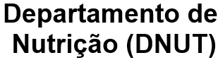

Grupo de Atendimento Nutricional em Hipertensão
Início
|
Nossa história
|
Encontros
|
Matérias
|
Receitas
|
Equipe
|
Contato
Professoras adjuntas do departamento de Nutrição:
DrªKiriaque Barra Ferreira Barbosa;
DrªAnalícia Rocha Santos Freire;
Supervisores:
Tiago Marcel Santos Vila-Nova (Mestre em Ciências da Nutrição pelo programa de
Pós-Graduação em Ciências da Nutrição da Universidade Federal de Sergipe
);
Beatriz Passos de Brito (Mestrando do Programa
Pós-Graduação em Ciências da Nutrição da Universidade Federal de Sergipe
)
;
Estudantes de nutrição